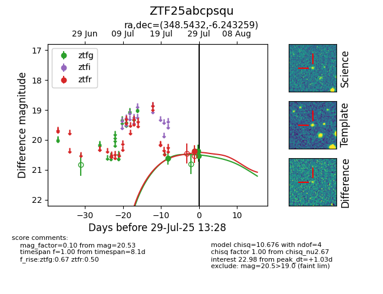

Target ZTF25abcpsqu at 2025-07-29 13:28, see:
FINK: fink-portal.org/ZTF25abcpsqu
Lasair: lasair-ztf.lsst.ac.uk/objects/ZTF25abcpsqu
ALeRCE: alerce.online/object/ZTF25abcpsqu
alt names
ZTF25abcpsqu (ztf,fink)
coordinates:
equatorial (ra, dec) = (348.5432,-6.24326)
galactic (l, b) = (70.6244,-58.84958)
photometry
last ztfg=20.53, ztfr=20.37
4 ztfg, 1 ztfr detections
